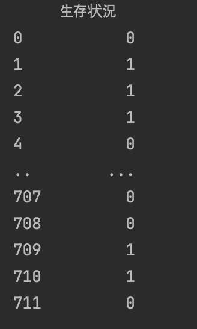

タイタニックの分析
タイタニックに乗っている乗客を性別、年齢による分類と年齢別、性別別の生存状況を中心に分析してみた。
乗客の性別比率

まず、タイタニックに乗っている乗客のうち男性が453人、女性が259人だ。これらの乗客を年齢別に整理すると、まず全体性別の年齢は

このグラフで確認できる。
グラフを分析してみると、20~30代の乗客の割合が最も多く、50代からは乗客の数が急激に減ったことが確認できる。
では、性別別年齢はどうなるだろうか。
このグラフを参考にしてみると、女性乗客は20~30代が最も多く、男性乗客は20代が最も多いことが分かる。
乗客を出港地別に分類してみると、
このグラフから分かることができる。タイタニックは、英国のSouthampton44埠頭から出航し、フランスのCherbourgやアイルランドのQueen's Townに寄港した後、米ニューヨークに向け出航した。そのうち、乗客の多くははSouthamptonで搭乗していたことが分かる。
乗客の生存状況
以下は、搭乗していた乗客の生存状況に関する分析である。

0は死亡、1は生存を意味する。しかし、このデータでは乗客のどの程度が生存しており、死亡したかは分かりにくい。
そして、まず性別による生存状況を分析してみた。

同様に、0は死亡、1は生存を意味する。この分析データを参考にすると、生存率は女性の方が高く、死亡率は男性の方が高いことがわかる。これをもう少し分かりやすく表にまとめると、

この表を参考にすれば、さらに差を感じることができる。
また、乗客クラス別に生存状況を比較すると、

このような結果を得ることができる。